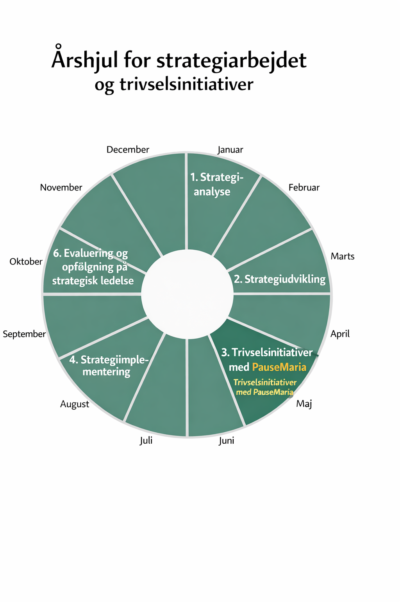

Overordnet ramme for arbejdet med strategi og forbedringer.

Analyse af nuværende situation, data og behov.
En enkel SWOT‑matrix til at understøtte strategianalysen.
| Styrker (Strengths) | Svagheder (Weaknesses) |
|---|---|
| Muligheder (Opportunities) | Trusler (Threats) |
Interne styrker/svagheder (7P) og eksterne faktorer (PESTEL + konkurrence).
| Type | Navn | Score / Klassifikation |
|---|
| Faktor | Type |
|---|
Hvert strategipunkt vurderes ift. om det bruger organisationens styrker, kompenserer for svagheder, udnytter muligheder og beskytter mod trusler.
| Strategipunkt | Bruger S | Kompenserer W | Udnytter O | Beskytter mod T | Kommentar | Værdi (1–5) |
|---|---|---|---|---|---|---|
Vurder hvordan hver interessentgruppe forventes at reagere på de enkelte strategipunkter.
Brug: + (positiv), − (negativ), o (neutral)
| Interessentgruppe | Strategipunkt 1 | Strategipunkt 2 | Strategipunkt 3 | Strategipunkt 4 | Strategipunkt 5 |
|---|---|---|---|---|---|
| Ejere og aktionærer | |||||
| Bestyrelsen | |||||
| Banker og kreditgivere | |||||
| Kunder | |||||
| Direktion | |||||
| Mellemledere | |||||
| Teamledere | |||||
| Medarbejdere | |||||
| Lokalsamfundet | |||||
| Fagforeninger |
Vurder om organisationen har de nødvendige ressourcer til at gennemføre strategien, eller om der skal skaffes ressourcer udefra.
| Ressourcetype | Vi har ressourcerne | Vi skal skaffe ressourcer | Kommentar |
|---|---|---|---|
| Antal medarbejdere til strategiens fokusområder | |||
| Medarbejderkompetencer | |||
| Mellemlederkapacitet (kritisk for implementering) | |||
| Lederkompetencer til implementering | |||
| Bygninger/lokaler | |||
| IT‑systemer og netværk | |||
| Finansiering (strategi) | |||
| Finansiering (implementering) |
Planlægning af hvordan strategien skal føres ud i livet.
Forbedre onboarding og samarbejde i teamet.
| Leverance | Ansvarlig | Uge |
|---|---|---|
| Prototype | Jakob | 2026/12 |
| Testfase | Teamet | 2026/14 |
| Implementering | Projektleder | 2026/18 |
| Risiko | Håndtering | Konsekvens | Sandsynlighed |
|---|---|---|---|
| Forsinkelse | Tæt opfølgning | Middel | Lav |
| Manglende ressourcer | Prioritering | Høj | Middel |
Herunder PauseMaria – et værktøj til at understøtte pauser og trivsel.